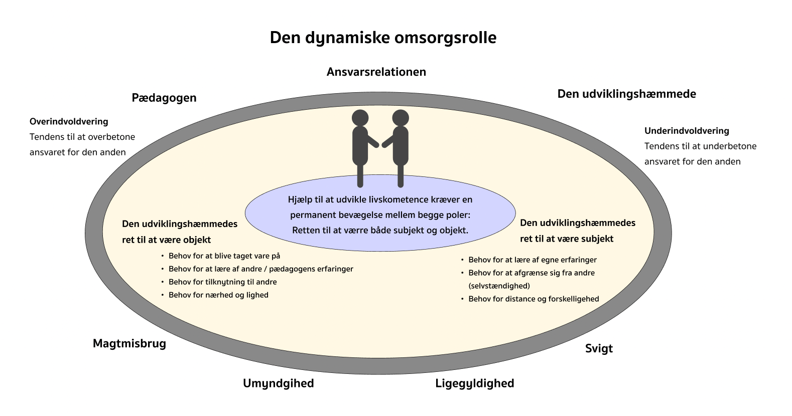

FOR FAGPERSONER
Denne del er siden er for fagpersoner, det har til formål at hjælpe fagpersoner til at hjælpe borgere med deres seksualitet. Husk at forhør dig hos ledelsen i din institution, for at undersøge hvad du må hjælpe borgeren med, samt hvor dine grænser går. Hvornår I skal have fat i en seksualvejleder, hvis i ikke allerede har en i din institution.
BLIV KLOGERE HER
Kærlighed
Denne del er siden er for fagpersoner, det har til formål at hjælpe fagpersoner til at hjælpe borgere med deres seksualitet. Husk at forhør dig hos ledelsen i din institution, for at undersøge hvad du må hjælpe borgeren med, samt hvor dine grænser går. Hvornår I skal have fat i en seksualvejleder, hvis i ikke allerede har en i din institution.
Min seksualitet
På denne del af siden, vil din borger blive præsenteret for måder at udforske sin seksualitet på. Siden lægger op til, at du som fagperson kan hjælpe borgeren, og have samtaler om hvad borgeren oplever.
Porno
På denne del af siden, vil din borger kunne finde links til realistisk porno, med henblik på at kunne se hvordan sex er i virkeligheden. Der er links til “urealistisk” porno, det er tydeligt her at denne type porno, er til fantasien.
Sexlegetøj
På siden med sexlegetøj, vil din borger blive præsenteret for forskellige hjælpemidler til forskellige områder af kroppen. Der vil også være links, som refererer til hjemmesider, som har en høj kvalitet. Det kan eventuelt række en del spørgsmål, som du skal være forberedt på at kunne svare på. Orienter dig derfor på siden under sexlegetøj, så du sikrer dig at du kan hjælpe din borger bedst muligt med at finde det legetøj, der passer til deres behov. Det kan være en fordel at danne sig et overblik og dernæst gå i en butik for at din borger kan røre og fornemme produkterne.
Prostitution
Her er der en række prostituerede vi har et samarbejde med, du kan ringe til dem og fortælle om din borgers behov, for at finde den rigtige til din borger.
Hvordan forholder du dig til sex
Omsorgsmodellen

I arbejdet med seksualitet kan den dynamiske omsorgsmodel være effektiv, for at kunne reflektere
over din rolle
som fagperson, og hvilken position du sætter din borger i.
Du som fagperson, har risiko for overinvolvering, da du har et ansvar for at hjælpe borgeren,
kan man komme til
at misbruge sin magt ved at gøre borgeren for meget til objekt. På den anden side, er der også
risiko for
underinvolvering, hvor du giver borgeren for meget ansvar i situation, som borgeren ikke er i
stand til.
Derfor er det vigtigt at pendulere mellem borgerens ret til at være objekt og subjekt. Borgeren
skal dermed høre
andres erfaringer og råd, samtidig have rum til at lære af egne erfaringer.
Du kan læse mere om denne model, i bogen: Køn, seksualitet og mangfoldig. 2. udgave, 2021.
Skrevet af Steen
Baagøe Nielsen, Gitte Riis Hansen og Anette Erlandson Pedersen. S. 261-265.
Risikoen for overgreb
Mennesker med funktionsnedsættelser, er grundet kognitive og intellektuelle begrænsninger, samt manglende viden om seksualitet og seksuelle grænser, i højere risiko for at blive udsat for seksuelle overgreb.
Du kan imødekomme borgerne og hjælpe dem med at navigere i deres følelses- og kærlighedsliv ved eksempelvis at lave forumspil, tegninger, fingerdukker og meget mere. Du kan læse nedenstående pjece, for at finde inspiration til emnet her.
Pjecer til mere information om arbejdet:
Seksuelle overgreb - Nej tak! Denne pjece, kan har tegninger og historier, der kan hjælpe borgere med at forstå hvornår man bliver udsat for et overgreb, samt hvordan man kan sige fra.
Seksuelle overgreb mod mennesker med handicap - gode råd om tegn på overgreb. Denne pjece, indeholder fakta om seksuelle overgreb mod mennesker med funkionsnedsættelser, hvilke tegn der er på at der er sket et overgreb og hvordan man som fagperson kan hjælpe borgere i det:
Denne pjece, er om seksuelle overgreb mod mennesker med handicap - gode råd om at forebyggelse.
Denne pjece, er om seksuelle overgreb mod mennesker med handicap - Når skaden er sket.